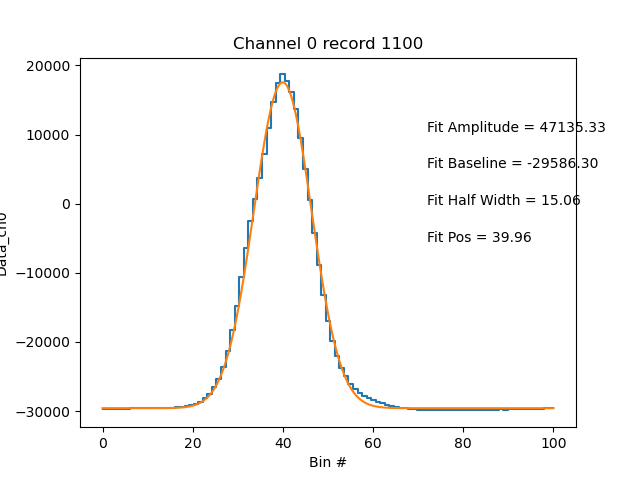

Note
Click here to download the full example code
Example for plotting a wave in a .sp2b file¶
Out:
/github/workspace/pysp2/util/peak_fit.py:455: RuntimeWarning: divide by zero encountered in true_divide
peak2area = np.max(data2, axis=1)/denominator
Processing record 0
/usr/local/lib/python3.8/site-packages/scipy/optimize/_minpack_py.py:833: OptimizeWarning: Covariance of the parameters could not be estimated
warnings.warn('Covariance of the parameters could not be estimated',
Processing record 1000
Processing record 2000
Processing record 3000
Processing record 4000
Processing record 5000
/github/workspace/pysp2/util/peak_fit.py:77: RuntimeWarning: Mean of empty slice
ratio = np.nanmean(
5877 records processed in 7.460424900054932 s
/usr/local/lib/python3.8/site-packages/act/plotting/plot.py:79: UserWarning: Could not discern datastreamname and dict or tuple were not provided. Using defaultname of act_datastream!
warnings.warn(("Could not discern datastream" +
import pysp2
import matplotlib.pyplot as plt
my_sp2 = pysp2.io.read_sp2(pysp2.testing.EXAMPLE_SP2B)
my_config = pysp2.io.read_config(pysp2.testing.EXAMPLE_INI)
my_sp2 = pysp2.util.gaussian_fit(my_sp2, my_config)
pysp2.vis.plot_wave(my_sp2, 1100, 0)
plt.show()
Total running time of the script: ( 0 minutes 8.242 seconds)